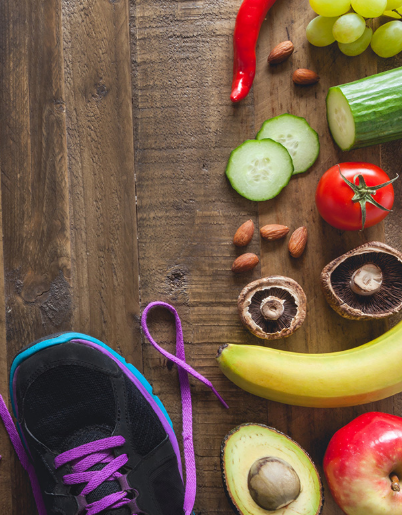

ملخص
- يستهلك الأطفال والشباب في السويد كميات كبيرة من السكر ونوعًا خاطئًا من الدهون .
- الكربوهيدرات، الدهون، البروتينات، الفيتامينات والمعادن هي العناصر الغذائية التي يحتاجها الجسم.
- نحن نحصل على طاقتنا بشكل أساسي من الكربوهيدرات والدهون، ولكن الجسم يستطيع أيضًا تحويل البروتين إلى طاقة.
- الكربوهيدرات السريعة تمنحك طاقة سريعة، لكنها لا تدوم طويلًا. قد تكون مفيدة أثناء ممارسة الرياضة وتحتاج إلى دفعة سريعة من الطاقة . وإلا، فقد تُسبب لك التعب وقلة التركيز.
- الكربوهيدرات البطيئة تعطيك الطاقة لفترة طويلة وتحافظ على مستوى السكر في الدم بمستوى أكثر توازناً ، مما يجعلك تشعر بتحسن ويقظة أكبر.
- لكي يشعر جسمك بالراحة، عليك أن تستهلك طاقة تعادل ما تستهلكه. وهذا ما يُسمى بتوازن الطاقة .
- يتم قياس كمية الطاقة التي نتناولها ونحرقها بالسعرات الحرارية (الكيلو كالوري).
- تتكون خطة الوجبات الجيدة من وجبة الإفطار - وجبة خفيفة - غداء - وجبة خفيفة - عشاء وربما وجبة مسائية، إذا كنت قد مارست الرياضة في المساء.
- وفقًا لنموذج الطبق ، يُنصح بتناول كمية أكبر من الخضراوات إذا كنت لا تمارس الرياضة كثيرًا خلال اليوم. يمكنك حينها التأكد من أن نصف طبقك يتكون من الخضراوات.
- إذا كنت أكثر نشاطًا بدنيًا، فيجب عليك استبدال بعض الخضروات وتناول المزيد من الكربوهيدرات بدلاً منها.
- تتكون دائرة الطعام من سبعة أجزاء، تُجمع فيها الأطعمة ذات المحتوى الغذائي المتشابه. وللحفاظ على صحة جسمك، يُنصح بتناول شيء من كل مجموعة يوميًا.
- من المهم أن تتناول وجبة إفطار جيدة ووجبة غداء جيدة حتى تتمكن من الحفاظ على التركيز طوال اليوم الدراسي بأكمله.
- إذا كنت تمارس الرياضة بكثرة، فسيحتاج جسمك إلى طاقة أكبر، مما يعني أنك بحاجة إلى تناول المزيد من الطعام. فقط لا تأكل كثيرًا قبل التمرين.
- إذا كنت تمارس تمارين القوة، فيمكنك تناول كمية أكبر قليلاً من البروتين، وهو أمر ضروري لبناء العضلات، وإذا كنت تمارس المزيد من تمارين القلب والأوعية الدموية، فهذا يستخدم الكثير من الطاقة وقد تحتاج بعد ذلك إلى تناول نسبة أكبر من الكربوهيدرات.
